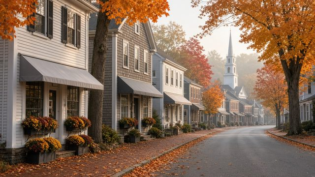
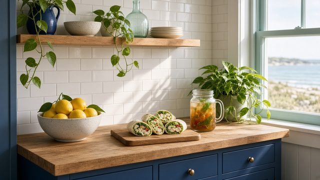

Falmouth, Cape Cod
The Falmouth directory
Local shops, services and wellness businesses, starting on Main Street and at Homeport. Every listing has an address and a phone or website, so you can call ahead or walk in.


Browse by category
Every category
Main Street ShopsJewelry, boutiques, kids and home7 listings · 7 on Main Street or at Homeport
FoodBreakfast, lunch, dinner, trucks, farm stands68 listings · 24 on Main Street or at Homeport
BookstoreBooks and a quiet hour1 listing · 1 on Main Street or at Homeport
Antiques & VintageAntiques and vintage1 listing · 1 on Main Street or at Homeport
FloristFlowers on Main Street1 listing · 1 on Main Street or at Homeport
BakeryA bakery on Main Street1 listing · 1 on Main Street or at Homeport
BeautyTanning, hair, and nails8 listings · 5 on Main Street or at Homeport
FitnessGym, yoga, personal training9 listings · 1 on Main Street or at Homeport
Spa & RecoveryMassage, physical therapy, chiropractic, day spas13 listings · 5 on Main Street or at Homeport
NutritionHealth food, smoothies and supplements3 listings · 2 on Main Street or at Homeport
DentalFamily and cosmetic dentistry2 listings · 2 on Main Street or at Homeport
Getting AroundTaxi and bike rentals2 listings · 1 on Main Street or at Homeport
TransportationTaxi, rides, and moving things1 listing
Home remodelingRemodeling and renovationsFeatured spot available
DoctorsVisits, urgent care, dentalFeatured spot available
HotelsWhere to stay1 listing
GolfGolfFeatured spot available
CommunityLibrary, senior center, youth sports, Town Hall, Chamber6 listings · 4 on Main Street or at Homeport
Art GalleryA gallery on Gifford Street1 listing
Thrift/ResaleThe hospital auxiliary shop1 listing
Music LessonsLessons at Highfield1 listing
Bike ShopBikes on Palmer Avenue1 listing
Garden CenterNorth of the walking map1 listing
Local MarketA market on Scranton Avenue1 listing
Dry cleanerCleaning on Teaticket Highway1 listing
Free Food & HelpFree meals, pantries, recovery meetings and hotlines.Free resources